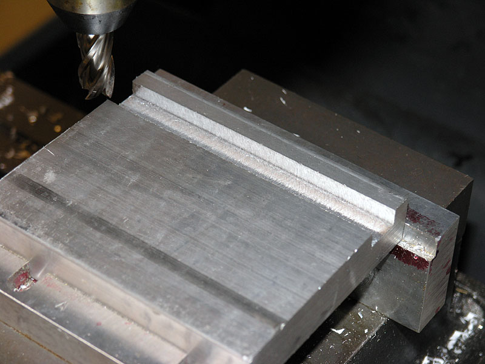

Milling
Machine Home
I bought a lathe first, and it's a nice one that taught me a lot about machinery and
metalworking. However, I must say that the mill comports better with the
way my mind works. The lathe is a subtle, elegant machine, that can be
persuaded to do amazing things if only you can think how. The mill seems
brute force and obvious. As a computer person,
and particularly one versed in computer graphics, a mill literally renders
in 3D using an x, y, and z axis. The computer does the same for graphics
in 2D using only x and y. The lathe cheats using rotating motion. It's
like polar coordinates and trig versus reading a map. But I digress and
begin to sound more like a computer geek (which I am) and less like a
machinist.
As I mention, the lathe
is a subtler, more elegant approach. I am firmly convinced that a cheap
lathe will perform better than a cheap mill. The physics just favor the
lathe more in terms of rigidity and the application of power and leverage.
My IH Mill on the stand
I built for it, right after cutting first chips...
Given my well
known feelings about refurbishing American tools versus buying new Asian, it should come as no suprise that I have purchased an Asian mill. The
choice of which mill bears talking about. There were two broad categories
that I considered, and two that I rejected out of hand. I rejected the
round column "mill/drills". I felt the latter involved too many
compromises and that I would outgrow one way too quickly. They are not
as rigid, and you can't raise and lower on that round column without knocking
your precision out the window, which really limits their CNC possibilities.
I also discarded the really small mills like the Taig or the X3 sold by
my friends at Lathemaster because I wanted something with more capacity.
The two categories I considered
were full featured square column mills (which is what I wound up with)
and the knee mills, which are Bridgeport clones. The latter were very
tempting, but I was ultimately concerned about how well one would fit
into my shop. My ceiling is only 82 inches high, and everything going
into the shop has to fit through a door that is only about 2/3's standard
height, goes down an 18" step, and then makes a sharp right turn.
Manuevering 1600 to 2000 pounds of Bridgeport clone through that knothole
seemed too difficult. Among the square column mills, I like the bigger
version sold by Lathemaster as well as a similar one offered by Penn Tools.
The last thing that swayed me to take action was that Industrial Hobbies
put on a fantastic sale on the mill with a major price break as well as
free shipping.
The mill showed up at the
local freight terminal almost the day after I had ordered it, which surprised
me. I had a mad scramble to find someone who could help transport a 1000lb
crate to my house and offload it inside. There it sat for several months
until I was able to build a decent stand
for the 900lb mill before moving it into the workshop and firing it
up. Thank you Cabrillo College welding program for introducing me to the
essential skill of welding, and thank you eBay for offering up a cherry
Miller Tig welder for about half what a new machine would've cost!
Mill dimensions:
Bottom of base (no stand)
to top of motor at maximum height: 58"
Bottom of base to top of
table: 9"
I've been very pleased with my Industrial Hobbies mill. From time to time I read of folks who had some sort of issue with their IH Mill, but mine has been great from the get go. Unfortunately, Aaron Moss, the owner, decided to get out of the business due to fears of competition from the Chinese building cheaper CNC mills. I'm still quite happy with my mill, but there will be no more IH mills available. Fortunately, they're just ZAY-class mills similar to all of the other square column mills, so I am counting on being able to swap in parts from the other mills.
Newsflash: I got the word at the end of 2006 that Industrial Hobbies is going out of business. It's a pity, because Aaron was offering a great mill and CNC kit. I purchased the CNC conversion kit and will eventually switch my mill over. I'm not too worried about spares and so forth. The ZAY-type mills are very common, although they each differ slightly in their design. I guess Lathemaster's big mills are about as close to the IH as you can get any more.
Apparently Aaron sold the business to a new owner, so we'll have to see what sort of things he does with the mill and where he takes the business.
 |
Cutting
My First Mill Chips |
They say you never forget
the first time (no, I don't mean THAT first time!), so I thought I'd capture
the moment. After powering up the mill for the first time, I trammed the
head with my Indicol indicator holder, a 0.001" Mitutoyo dial test
indicator, and a 1-2-3 block. I wasn't too particular, settling for being
with 2 or 3 thousandths, as I was eager to try the mill out. Next I clamped
my Kurt 4" milling vise (got a 6" too, but the 4" is cute
and much lighter!) to the table. To get the vise square I again took a
shortcut. Somewhere I read about the nifty trick of putting an endmill
against the back of the vise jaw, finger tightening the vise clamp at
that end, and then cranking the table to let the mill "push"
the vise into square. It worked pretty good! Finally time for the moment
of truth.
I selected a 1/2" Niagara
4-flute endmill, and a piece of 1/2" thick 6061 aluminum I had laying
around. Spindle speed was set to 400 rpm. I didn't bother to check whether
that was an appropriate speed or not, especially since this machine is
all manual feeds so I've no idea of the feed rate! I locked all of the
gibs except for the X-axis for maximum rigidity.
I stuck the aluminum in
the vise, touched off the mill, and started experimenting with depth of
cut. Compared to my Lathemaster lathe, cutting
with this mill is amazingly smooth and quiet, which I took as a good sign!
It shrugs off tiny depths of cut with ease. I got up to 0.010" in
the aluminum before it started to even be a little less smooth. It certainly
wasn't chattering, but the surface finish had deteriorated. I think part
of that was also due to the fact that I just let the chips pile up, so
it was cutting the same chips again too. Lastly, they say cutting a slot
will not have as good a finish if the slot is exactly the width of the
endmill. In any event, here are a few photos of the results:
First
Pile O' Chips!
A little
closer...
Sans chips
you can see the finish is a bit rough...
I was curious
to see how much better the finish could be with this end mill, so I cranked
the Y-axis slightly so I would be cutting just the far wall and making
a slightly wider slot. Given where the wall was and the direction I was
going, this was conventional not climb milling, so the finish is supposedly
better if I had gone the other direction and climb milled. Here is the
result, with a much nicer surface finish:

Shallow
cut on wall to yield a better surface finish...
The shallower
cut, being clean of chips, and just cutting the one wall really cleaned
up the slot tremendously. Overall, I am very pleased with this mill and
looking forward to "getting to know it" for a few months before
I start converting it over to CNC operation.
|
Mill
Tooling |
The tooling for mills involves
some overlap with the lathe (more and more I'm learning), but there are
a number of things uniquely "mill" as well. I have quite a bit
more tooling, but wanted to give a list for beginners to start from.
Basic Tooling and Must Haves:
- I'll assume you have the
basic measuring goodies like a set of digital calipers.
- Indicol indicator holder
(buy the real thing on Enco, or a clone from someone like Shars) and Test
Indicator (Interapid make the best!). You will need these together with
a mallet to tram your mill head, which should be your first step. Avoid
coaxial indicators. The Indicol is your first best choice. The coax is
a handy shortcut for rough work, but no substitute.
- 1-2-3 Blocks: useful when
tramming, and for many other things.
- Clamping set to fit your
mill's T-slots.
- Kurt Vise or clone. Get
a used Kurt on eBay ($180-200) or buy a clone. I hear LittleMachineShop's
is nice. I recommend 4" for the smaller mills. A 6" is huge.
- Mill Holders. Buy a set.
A lot of folks "standardize" on 3/8" and 1/2" shank
end mills. You may want an extra or two in those sizes.
- End Mills. Get some 3/8"
and 1/2" end mills, both 2 flute and 4 flute. Try some American-made--you'll
be amazed at what a difference it makes.
You can now make some chips.
Work at getting your mill trammed and the vise on the table true. Practice
some cuts. You next steps will be a function of what you want to build.
I'll break it into a couple of tiers.
Got to have pretty quickly
tooling:
- Drill bits and a chuck.
Get a keyless chuck from Lathemaster. They're fabulous and inexpensive.
- Fly cutter. Leaves a fine
finish and good for squaring large surface areas. You'll need a tool to
go into the fly cutter as well. Lots of folks use brazed carbide lathe
tools in these.
- Collets and chuck. You
will need to decide what system you want. I highly recommend going with
one of the ER series. Each collet in an ER can clamp on a wider range
of diameters than other collet systems. They just work better than older
systems like R8 or 5C.
- More cutters. Depends
what you are building. You probably want a fly cutter pretty quickly.
They leave a fine finish and can be used to square large areas. Lots of
specialized cutters too. I have a set of Keo zero flute deburring bits
that are fantastic.
- V-Blocks. Essential to
cutting round things.
- Soft jaws for vise. I
only use my Kurt's with aluminum jaws. You can make them pretty easily,
and it's a decent early project to try. Or, you can buy them from a variety
of sources.
- Parallels. Gotta have
'em pretty soon! You stand your work on them in the vise to get it sitting
up high and square.
More Esoteric: Base this
stuff on the needs of a particular project you are building. A lot of
it is very cool, but you'll spend a fortune here, so wait until you need
it.
- Rotary tables. Very handy.
Don't go too big for your mill and make sure you get one that sits both
vertically and horizontally.
- Angle blocks and Kant-Twist
clamps: Because you never have enough ways to clamp things!
- Angle related tooling:
Precision angle blocks and 60 degree tilting V-block, just to name a couple.
Sometimes these little goodies are way faster than dragging out the rotary
table and setting it up. Sine bars, which will require a gage block set,
and tilting tables are a little more investment for angles.
- Finishing cutters: Corner
rounding, deburring, and so on.
- Fancy hole drilling: Reamers,
counterbores, spade drills, oh my!
Obviously, one could go
on and on. You may also want to experiment with indexable tooling. Try
an inexpensive TPG-insert face mill. You might like it better than fly
cutting.
Quite a lot of information about surface finish, cutters, and feeds and speeds.
More notes from the Internet
so I won't forget.
The rotary table need not be exclusively devoted to the mill, but in general practice, they usually are. Visit my page on rotary tables to learn more about these intriguing devices.

|
CNC
Conversion |
CNC Conversion is my ultimate
ambition for the mill. It looks to be relatively easy in this day and
age to convert the acme screws to ballscrews (thus reducing backlash and
friction yielding much better accuracy), create brackets to mount servers
or steppers, and interface said motors to the PC. That's all readily obvious
reading the articles on the net. What is less
clear is how smoothly things go on the software side. There is talk of
Windows not playing well with CNC. It is not, after all, a real time operating
system, and periodically will make the machines wait when they don't want
to, the same way it does us humans. Opinions vary on how successfully
one can get around these issues, and it's really hard to get a flavor
for what it's like to actually use these homebrew CNC rigs day to day.
I sympathize with the many novices who want to know how to build one while
retaining the use of handwheels. In any event, being a hardcore
computer geek, I feel I can handle the computer piece far better than
the machining, so we'll work through it.
Just to be sure, I started
my CNC efforts with a lathe conversion,
thinking that would be easier. After all, they say you learn machining
starting with a lathe? While the lathe is a conversion from scratch, I
have purchased Industrial Hobbies excellent "mechanicals only"
CNC conversion kit for the mill. It includes the ballscrews and motor
drives. I will furnish the motors and electronics. The kit was on sale
at a considerable savings, and having it should save me a tremendous amount
of effort and time.
|
Mill
Accuracy |
I've made a few measurements
so far to try to understand how accurate my mill is:
Out of the Box: Trammed,
but not Squared (i.e. column has not been shimmed) |
Test |
Method of Testing |
IH Mill Results |
Comparable Mill Specifications |
| Quill Runout |
Used an Interapid B1 DTI and 1-2-3 block to measure
the deflection as I ran the quill up and down. |
Maximum of 0.0075" over the full travel. Most of
the travel was under 0.005". There seems to be a final deflection
near the end of travel that is large. |
Tormach has no quill.
Wilton Bridgeport clone spec for this is 0.000984", which
is quite a bit better than the IH turned in. |
| Z-Axis Deflection |
Used an Interapid B1 DTI and 1-2-3 block to measure
how accurately the Z-axis tracked vertically as I cranked it up and
down. |
Maximum of 0.00075" over half the z-axis travel.
The needle on the DTI was barely budging, so it is possibly even less. |
Tormach spec is 0.001378" / 5.9". IH Mill got about half
the Tormach spec, which is considerably better.
Wilton Bridgeport clone spec for this is 0.002362", which
IH outperforming considerably. |
| Quill Backlash |
Used my Z-Axis DRO. Cranked
a specified amount on the handwheel (1 full turn), zeroed the DRO,
and then cranked exactly the same distance in reverse. The second
crank would include the backlash, since we changed direction. The
difference between the DRO indication and the amount a full turn should
have produced is the backlash. |
Value ranged from 0.004" to 0.014". The difference
is backlash in the clutch for the handle bars. |
There is no quill on the Tormach, but with ballscrews,
the Tormach mill achieves 0.001575" on z-axis backlash (they
call it "reverse idle stroke"). |
| X-Axis Backlash |
Used my X-Axis DRO. Cranked
a specified amount on the handwheel (1 full turn), zeroed the DRO,
and then cranked exactly the same distance in reverse. The second
crank would include the backlash, since we changed direction. The
difference between the DRO indication and the amount a full turn should
have produced is the backlash. |
X-axis backlash looks right at 0.010". |
With ballscrews, the Tormach mill achieves 0.001181"
on x-axis backlash (they call it "reverse idle stroke"). |
| Spindle runout |
With a DTI on the inside of the R8 taper turn the spindle
and see how far the needle swings around 0. |
I get 0.0005" or slightly less. |
Tormach doesn't show this on their inspection report. Instead,
they use a test bar and indicate 0.000787" at the top of the
test bar. I would expect these two are about the same.
For comparison, the inspection sheet of the ultra-accurate Mori
Seiki lathe calls for spindle nose runout of 0.000394". Many
modern CNC's claim under a tenth when new.
|
|
|
|
|